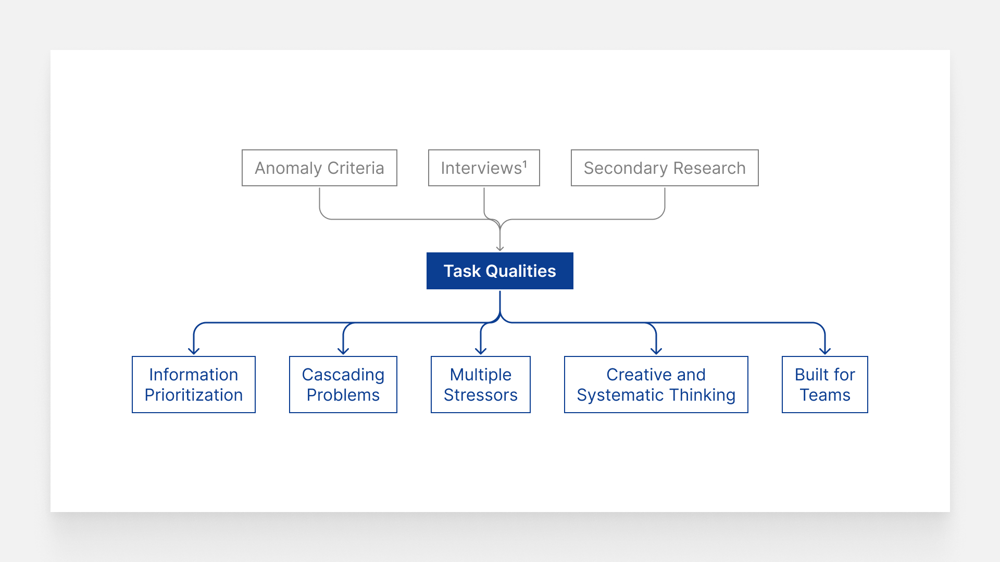

Task Qualities
Help simulate the qualities of an anomaly, which later on became the foundation for task development
How Task Qualities were Built

What task qualities are and the relations
By combining existing NASA Human Research Program (HRP) research as well as information that we gathered from expert interviews with astronaut trainers, we generated task qualities that help us simulate the qualities of an anomaly. These task qualities will help us build and develop our tasks.
5 Task Qualities
① Information Prioritization
- Anomalies require astronauts to distinguish critical information from non-critical information and prioritize problems based on what is most likely to lead to fatality, as this poses teh greatest threat to mission success.
② Cascading Problems
- Situations where an initial issue or failure triggers a series of subsequent failures, each one compounding the impact of the previous one. since systems are so interconnected, astronauts will definitely have to encounter such events on long-duration missions.
③ Multiple Stressors
- Astronauts face a great deal of psychological stress and pressure when dealing with critical anomalies. Having ot problem-solve and predict the effects of your actions in time-intensive situations is very difficult, so tasks should have multiple stressors to account for this.
④ Creative and Systematic Thinking
- Creative thinking involves being able to repurpose existing knowledge in novel ways to develop efficient solutions while systematic thinking extends beyond one-to-one problem relationships.
⑤ Built for Teams
- There will be multiple astronauts dealing with anomalies. It is crucial for the success of any mission that astronauts can collaborate effectively and utilize the existing knowledge that each astronaut has. Tasks must make way for communication using features like assigning participants specified roles.